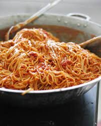

Spaghetti Recipe

You simply cannot go wrong with spaghetti.
It is super easy and a true Italian classic leaving you full and satisfied.
The next best thing is to pair it with a glass of wine!
Ingredients
- Ground Beef, Turkey or any vegan meat alternative
- Ragu Super Chunky Mushroom Sauce
- Your choice of spaghetti noodles
- Parmesean Cheese
Steps
- Set your pot to a boil, add a tsp of salt
- Once boiling, add your spaghetti noodles, let boil for 12 minutes
- While spaghetti is boiling, put meat on frying pan and fry for
15min, stir regularly
- Once spaghetti is done, drain the water
- Add meat to spaghetti and then add the Ragu Sauce,
stir until completely mixed
- Place on plate and add Parmesean Cheese. Enjoy!